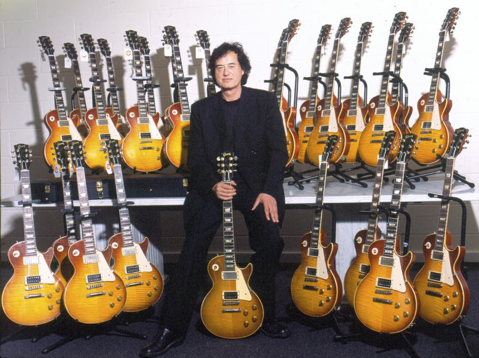
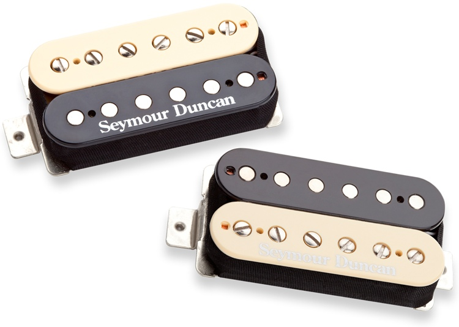

Description
1.Traditonal Weight Relief: Nine round holes in a Les Paul’s mahogany body before the maple top is attached. The holes are strategically placed in the lower bouts on the bass-side of the guitar. The result, DeCola says, “is a guitar that’s lighter than a non-weight-relieved guitar, but which still has some weight to it and feels solid.”
2. Chambered Weight Relief: A unique guitar-building technique, akin – in some ways – to a Gibson semi-acoustic but with all the looks of a trad Gibson Les Paul. “This is the most dramatic technique,” says DeCola, “and results in a guitar that almost has more of an acoustic resonance to it.”
Availabe Colors
Select your guitar pickups!
 Page Pickups
 Seymour Duncan